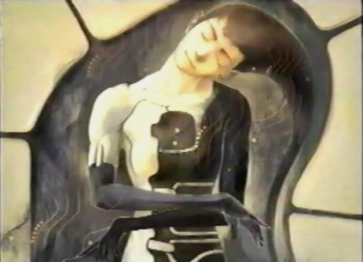

(Divine Visitor) Final Diary Entry: The Final Battle Hello fellow Panzer Dragoon Saga Players! I hope Edge's Diary has been a great help so far in helping you get the most out of your play through Panzer Dragoon Saga. Unfortunately, Edge didn't get the chance to write his final diary entry. After the battle with Sestren, he completely vanished, and was nowhere to be found. So, I'm here ("The Divine Visitor" or "The Player") to fill you in on the details, involving Edge's epic battle with the Anti-Dragons and Sestren. I'll tell you every strategy you'll need, in the coming battles ahead. Read the Divine Overview below, then click on "Enemies Encountered" above, to view the enemy strategies. |
|
| Divine
Overview |
|
1. Upon returning to the Tower, enter the gate that leads to 15F West, and take the elevator at the end of the corridor to 1F West (Misnamed as 1F East. Exit to Bottom Floors. |
|
2. Save your game and enter the gate that leads to 1F North. Take the elevator down to the control area. |
|
3. Azel will begin to open the path to Sestren. Edge and Azel both say their final words to each other. Edge then departs for the final battle. |
|
4. While Edge enters the Sestren Network, Azel proceeds to destroy the Uru Tower. |
|
5. Once inside the Sestren Network, you will have to fight five Anti-Dragon sub-bosses . View the "Enemies Encountered" section, to view strategies on how to defeat them all. |
|
6. After the five Anti-dragons are put to rest, you will then have to take on Sestren himself. View the "Enemies Encountered" section to learn how to defeat the final boss. |
7. After Sestren is destroyed, "you," the Divine Visitor, will have to push A, B, or C, on your Saturn Controller, to finally deactivate the Sestren Network. |
|
8. Congratulations! You have freed mankind from the will of the Ancients. Now sit back and watch the nice ending! |
|
9. Are you worthy to live among the Gods? |
|
 10. If not, here's the nice artwork you'll get if you receive a perfect game. |
|
11. After you receive your game ranking, be sure to save your game, when prompted. When you reload your save file, you will be treated to a couple extras, when you enter the Box Game, located on the World Map. |